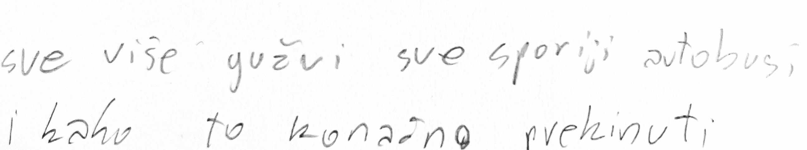
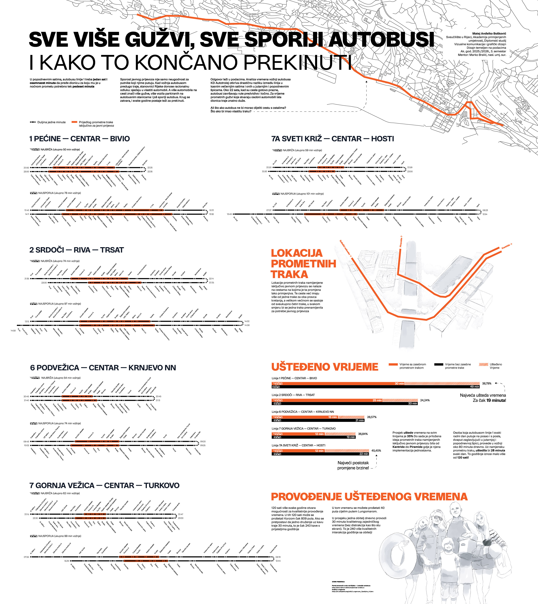
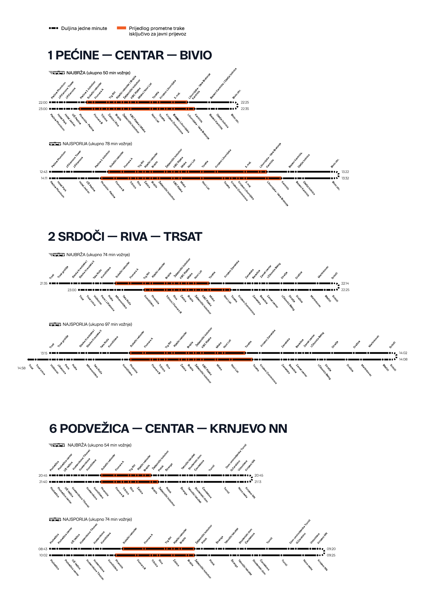
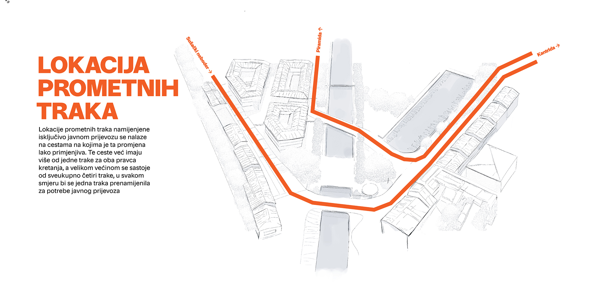
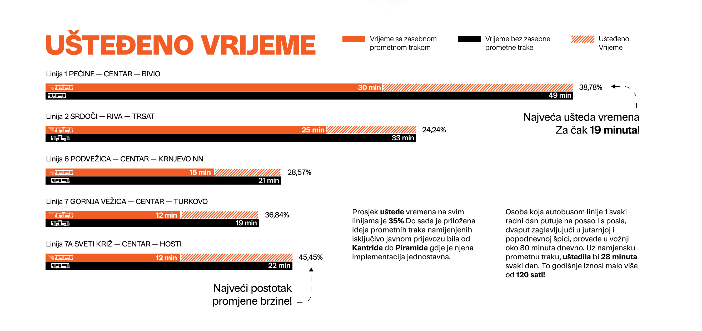
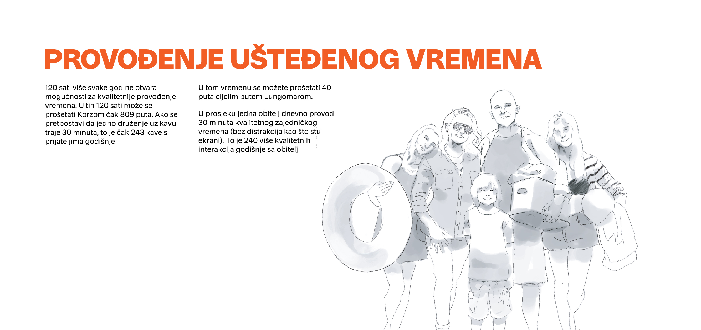

Sustav javnog autobusnog prijevoza u Rijeci objavljuje podatke o vremenu dolaska svakog autobusa za svaku liniju. Isti autobus u popodnevnim satima potroši više vremena za dolazak do svog odredišta, dok navečer to vrijeme je znatno kraće, a ta razlika u vremenu je uzrokovana gužvama na casti.
Projekt vizualizira tu razliku kroz različite linije, a zatim iznosi argument: kada bi autobus imao vlastitu traku, prometna špica mogla bi se odvijati brzinom prazne ceste. Ono što se pritom pojavljuje nije pritužba na promet, već konkretan, na podacima utemeljen prijedlog kao i mjera koliko bi zajedničkih sati grad mogao vratiti građanima.




